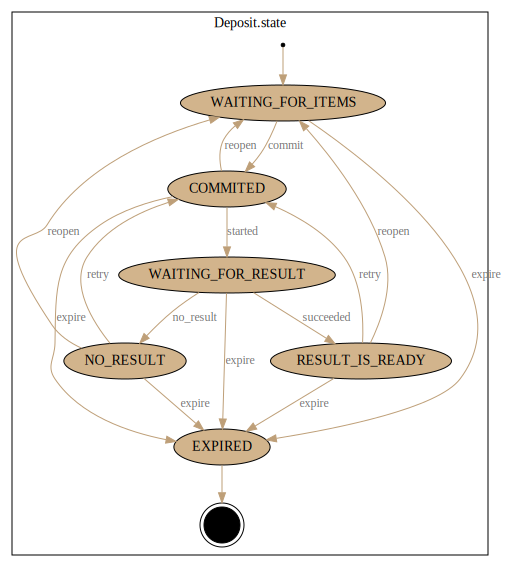
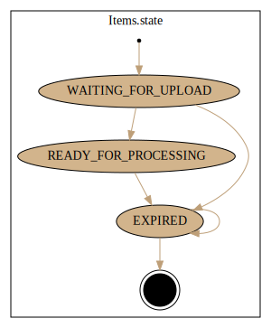
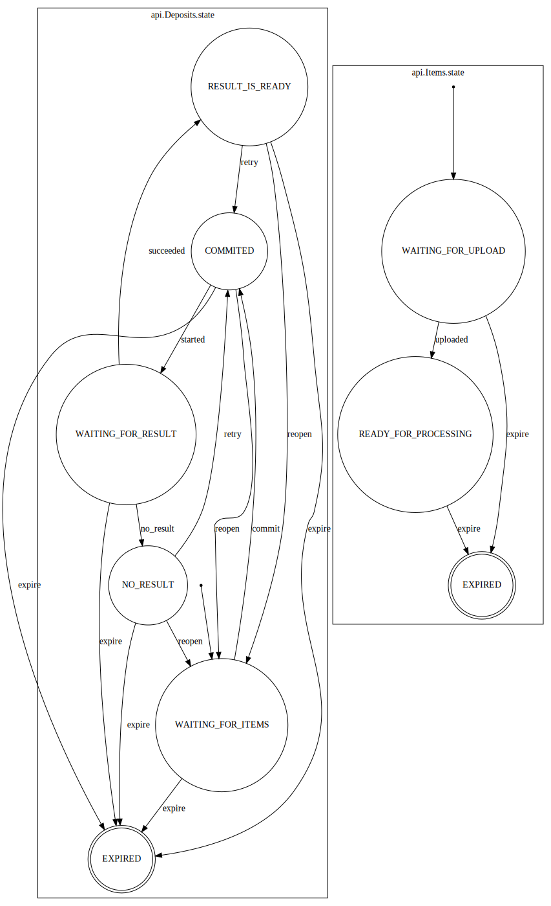

API¶
Prerequisites¶
For each article, the service requires:
-
An article XML file that is well-formed and valid according to the NLM Journal Publishing or Archiving DTD version 2.3 or 3.0 or to the NISO JATSJournal Publishing or Archiving DTD version 1.0 or 1.1.
-
Images referenced in the article XML file must be supplied in TIFF format with ".tif" extension (although the image references in the graphic/@xlink:href might not include the file extension).
-
Also, the PMC known domain name may be supplied to set the style/branding of the output. If a domain name is not supplied, a general HHS style will be used. If you need the output to be styled differently from what currently supported, please make an inquiry.
-
A
domainthe article belongs to. (Branding and rendering could be specific for each domain.). If thedomainof your interest is not supported yet, then contact PMC group. -
Depositor name.
Note
PMC conversion group needs to investigate if images other than the tiffs are currently expected in XSL code.
Introduction¶
The production API endpoint is available at https://api.ncbi.nlm.nih.gov/lit/jats2pdf/api/.
Also, there is a starting/home page of the service available at https://dev.ncbi.nlm.nih.gov/lit/jats2pdf/.
Other links:
The following entities of the API are available for consumers:
- depositors -> /api/depositors/
- domains -> /api/domains/
- deposits -> /api/deposits/
- items -> /api/deposits/{
deposit_pk}/items/
Attention
This service currently supports interactive requests with the browser of your choice and with your custom application, which sends and accepts data in JSON format.
Definitions¶
Detail
-
depositor- the consumer of this web service (later, a login from credentials will be used instead), currently used for self-identification. -
domain- the name to be used in the future for manuscript branding and processes applied by the jats2pdf-back-office scripts. Currently, the PI <?domain ...?> or <?origin ...?> from XML itself is used for that, though you still must provide that identification in your requests. -
deposit- set of files (aka items) to be used in conversion. All files in deposit must have unique names. Only one manuscript XML file must be present. All other files expected are images for figures, tables (if no native tables available), equations if applicable. The deposit could be provided as a single or multiple archive file(s) (in .zip, .tar, .tar.gz or .tgz formats) which includes an XML file with all image files it depends on Or as uncompressed/unarchived individual files. Each file of the deposit is called an item, see definition of item below. -
item- is an entity of this service which represents a file (name) or URL behind a file. All items together constitute a deposit to be used in the conversion process to PDF document. -
deposit_pk- the service generated identifier of a deposit (also called as deposit_id). -
item_pk- the service generated identifier of an item (also called as item_id).
Caution
When an item is a file, it has to be uploaded to NCBI's S3 storage bucket by consumer separately. When an item is an URL starting with "http://" or "https://" sub-strings then the jats2pdf-back-office component must be able to access files behind the URLs from storage of consumer's choice.
Warning
Files compressed with various utilities (producing .zip, .tar, .tar.gz or .tgz formats) are not supported yet.
API Interactions¶
Tip
If you want to receive and send your data in json format use the following
headers: Content-Type: application/json and Accept: application/json in
your HTTP requests.
Tip
You can also point your browser to all endpoints of this service.
Warning
Not all forms work properly, unfortunately.
The following steps (in plain words) could be considered as a typical scenario to interact with a service.
Detail
- Create a deposit.
- Upload items to NCBI's S3 storage bucket if you can not provide URL of your files.
- Commit a deposit.
- Monitor a deposit state
- Fetch a result if generated.
The service supports many other actions, but they are not considered typical for the consumers.
Deposit¶
Create
1 | POST /api/deposits |
Note
To create a deposit you need to send a POST request to /api/deposits/
endpoint. Based on your desire and ability to provide your files inform
of URLs or files, you may proceed to one of the following sections
URL items, File items, Mixed items
or even with No items (do not worry you can supply items later
in subsequent requests).
Deposit Model¶
1 2 3 4 5 6 7 8 9 10 11 12 13 | {
action: string,
items: [
$item, $item, ...
],
details: string,
*depositor*: string,
*domain*: string,
#deposit_id#: string,
#created#: iso-8601-time-date-string,
#updated#: iso-8601-time-date-string,
#state#: string,
}
|
Important
Properties in the model above, enclosed into * (asterisks) are mandatory,
enclosed into # are read-only and should be in your requests.
Note
See details of an $item in your requests below.
Details
action- a property to indicate the desirable action applied to the depositdeposit_id- a deposit unique identifier.depositor- see explanations in Definitions section.domain- see explanations in Definitions section.state- a machine-readable deposit state, see diagram.created- time of creation of the deposit.updated- time of the last update of the deposit.items- an array of deposit items, see explanations of item in Definitions section.
Deposit Actions¶
Tip
the following actions could be used as values of action property
in deposit model or could be used with PUT requests
to the endpoints /api/deposits/{deposit_pk}/{action}/
Details
commit- commit a deposit for processing.retry- reprocess adepositif possible.started- mark a deposit to be waiting for result.no_result- mark a deposit as failed one with no result.succeeded- mark a deposit as successful.expire- mark a deposit as expired.
Note
Action value commit would make sense at the time of creation of new deposit for URL items. Not all actions are possible
at a given state, see Deposit states diagram below.
URL items¶
You can use the following model for your requests. See an example of such request on a separate page.
1 2 3 4 5 6 7 8 | {
action: string,
items: [
$item, $item, ...
],
*depositor*: string,
*domain*: string,
}
|
Tip
When you supply your deposit to the service with URL(s) it is recommended
to prepare and make available your file(s) ahead of time,
that you can use action property with value "commit"
to initiate processing of your deposit at the time of your request
when you create a deposit.
File Items¶
You can use the following model for your requests. See an example of such request on a separate page.
1 2 3 4 5 6 7 | {
items: [
$item, $item, ...
],
*depositor*: string,
*domain*: string
}
|
Tip
When you supply your deposit to the service with File(s) in response you will
get s3_put_url property for each item, which you have to use within 1 hour to
upload your files to NCBI's S3 storage bucket with HTTP PUT requests. Here is
an example of using curl: curl "${s3_put_url}" --upload-file an_article.xml,
curl "${s3_put_url}" --upload-file an_image1.tif, ...;
Hint
Just in case if s3_put_url would expire, just go to
/api/deposits/{deposit_pl}/items/{item_pk}/ and grab a new one. Or you can get
all items from /api/deposits/{deposit_pk}/ at once.
Important
After you uploaded all your files to NCBI's S3 storage bucket you have to
commit your deposit for processing by sending an HTTP PUT request to
/api/deposits/{deposit_pk}/commit/ endpoint.
Hint
To speedup the processing of your deposit you can send HTTP 'PUT' request at
the following endpoint /api/deposits/{deposit_pk}/items/{item_pk}/uploaded
after each successfully uploaded file to NCBI's S3 storage bucket.
Mixed items¶
This case should not be typical, but it still can be used. You can basically follow the File Items model above with exception to items supplied as URL for those see URL Items.
1 2 3 4 5 6 7 | {
items: [
$item, $item, ...
],
*depositor*: string,
*domain*: string
}
|
Important
After you uploaded all your files to NCBI's S3 storage bucket you have to
commit your deposit for processing by sending an HTTP PUT request to
/api/deposits/{deposit_pk}/commit/ endpoint.
No items¶
Warning
This model of depositing your article for conversion is also possible, but it would take more requests/response cycles.
1 2 3 4 | {
*depositor*: string,
*domain*: string
}
|
After a deposit was successfully created you have to create your item(s), follow the section Item creation
Deposit commit¶
If your items are all URLs the action property could be used
with value commit at the time of deposit creation
(see above) to save you an extra request not to be made.
But otherwise, you can commit your deposit to conversion (when all items are made available).
Tip
PUT /api/deposits/{deposit_pk}/commit/
Note
Here is an example of committing a deposit for conversion. commit-a-deposit
Deposit state monitoring¶
Tip
GET /api/deposits/{deposit_pk}/
After successful creation of a deposit (a deposit_id was acquired, items
are uploaded where needed, and started the conversion with commit action)
you can start monitoring your deposit for result or error(s).
Hint
See details of Deposit model.
The main target of your interest is a state property in the deposit.
State NO_RESULT¶
If you see the state of a deposit with value NO_RESULT you should check the value of the property details. Where you can find an error encountered at the time of conversion. In case if the error is not clear, contact PMC group.
In some cases, the error could be a temporary glitch, in such case
you can retry the conversion with retry action.
Tip
PUT /api/deposits/{deposit_pk}/retry/
State RESULT_IS_READY¶
When you see the value of the state as RESULT_IS_READY,
the next step is to search for an item where property result == true.
When you found it you should grab the value of
the property s3_get_url of that item and use it to download
your PDF. That URL has an expiration time of 3600 seconds,
if for some reason you did not succeed in that period, just re-fetch
the deposit deposit_pk again and use the new value of s3_get_url property.
State EXPIRED¶
If you see the state of a deposit with value EXPIRED than there is nothing you can do with this deposit, even if a result was created at some point.
Objects stored in the S3 bucket have an expiration time,
therefore the deposits have it too.
But you can create a new deposit if necessary.
Deposit states diagram¶
The state of the deposit is available in state property of each deposit.
You can check all the supported states in the following deposit states diagram:

and applicable actions to each state as the following endpoint
/api/deposits/{deposit_pk}/{action}/, which could be applied
with HTTP PUT request.
Deposit is ready¶
When the state of the deposit would become RESULT_IS_READY you can
look into the items property and iterate over to find the one with
property result and value true. There must be a s3_get_url property,
which you can use to download your PDF file from NCBI's S3 storage
bucket (using HTTP GET method).
Conversion failed¶
When the state property value of the deposit would become NO_RESULT
you may find the details of that state in details property.
Item¶
Create
POST /api/deposits/{deposit_pk}/items/
To create an item you should create a deposit first and acquire a deposit_id.
After that you can create your item(s) by sending POST HTTP request
(as many as the number of items)
to the following endpoint /api/deposita/{deposit_pk}/items
to create each item.
Item model¶
1 2 3 4 5 6 7 8 9 10 11 12 13 14 | {
result: boolean,
*item*: string,
*item_size*: integer,
*depositor*: string,
#created#: iso-8601-time-date-string,
#updated#: iso-8601-time-date-string,
#s3_head_url#: string,
#s3_get_url#: string,
#s3_put_url#: string,
#item_type#: string,
#item_id#: string,
#state#: string,
}
|
Important
Properties in the model above, enclosed into * (asterisks) are mandatory,
enclosed into # are read-only and should be in your requests.
Detail
result- a boolean property, which indicates, that the item is the result of a conversion.item- a string which represents/holds a file name or URL of deposit.item_size- a size of the item/file in bytes.depositor- an abbreviation of the depositor.created- the time of creation of the item.updated- time of the last update of the item.s3_put_url- property is applicable when depositor intention was to deposit file to Amazon S3 storage controlled by NCBI. The value of this property (URL) will be regenerated with a new expiration time, every time, when depositor access a deposit with "deposit_pk" or item with "item_pk". It will not be present if the depositor provided a retrievable URL. s3_put_url value is suitable to be used with method PUT when the file suppose to be uploaded to Amazon S3 storage.s3_get_url- populated with retrievable URL if it was provided by the depositor or with signed URL if depositor uploaded a file to Amazon S3 storage. This URL is suitable to be used with method GET when the file is uploaded to Amazon S3 storage (s3_get_url is needed for jats2pdf-back-office back-end service).s3_head_url- populated with URL of a item/file uploaded to Amazon S3 storage. This URL is suitable to be used with method HEAD when the file is uploaded to Amazon S3 storage (s3_get_url is needed for jats2pdf-back-office back-end service).item_type- FILE or URLitem_id- an item unique identifier.state- -state- a machine-readable item state, see diagram.
Item states diagram¶
The state of the deposit is available in state property of each deposit.
You can check all the supported states in the following deposit states diagram:

and applicable actions to each state as the following endpoint
/api/deposits/{deposit_pk}/items/{item_pk}/{action}/, which could be applied
with HTTP PUT request.
Auto-generated states diagram¶
